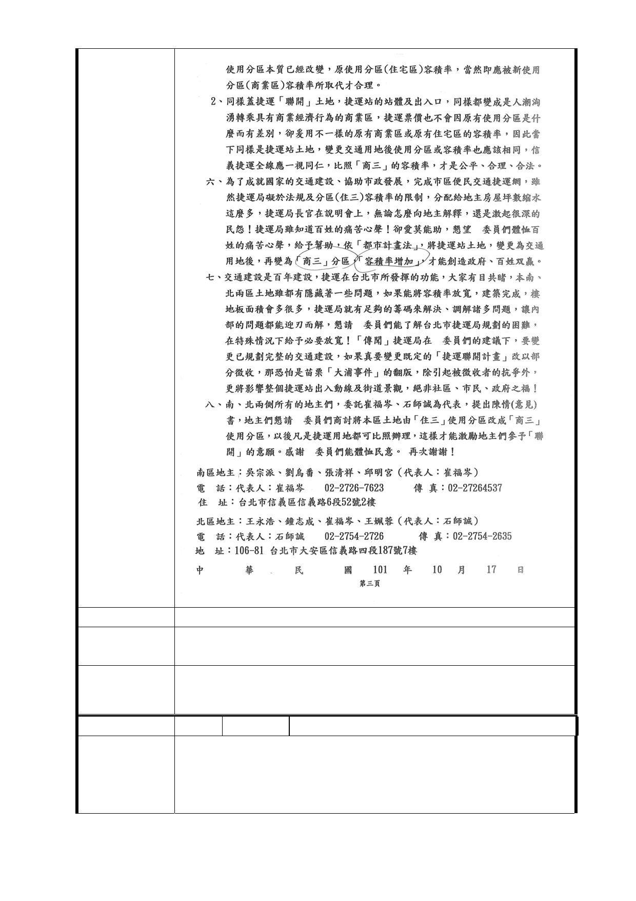

建議辦法
市 府 回 應 同編號 3、4、4-1 研析意見，使用分區及容積率之議題，仍
意 見 應依都市計畫委員會審議決議辦理。
委 員 會 決 議
同「市府回應意見」。
編 號 14-3 陳情人 崔福岑（R04 捷一、捷二）
郝市長龍斌閣下尊鑒：
我們是一群小市民，對於市長您從民國 99 年開始，在 12 行
政區辦理：都市更新「一坪換一坪」說明會，闡述「都市更
新」理念，以保有與「現住」室內面積相同的政策為原則，
- 95 -